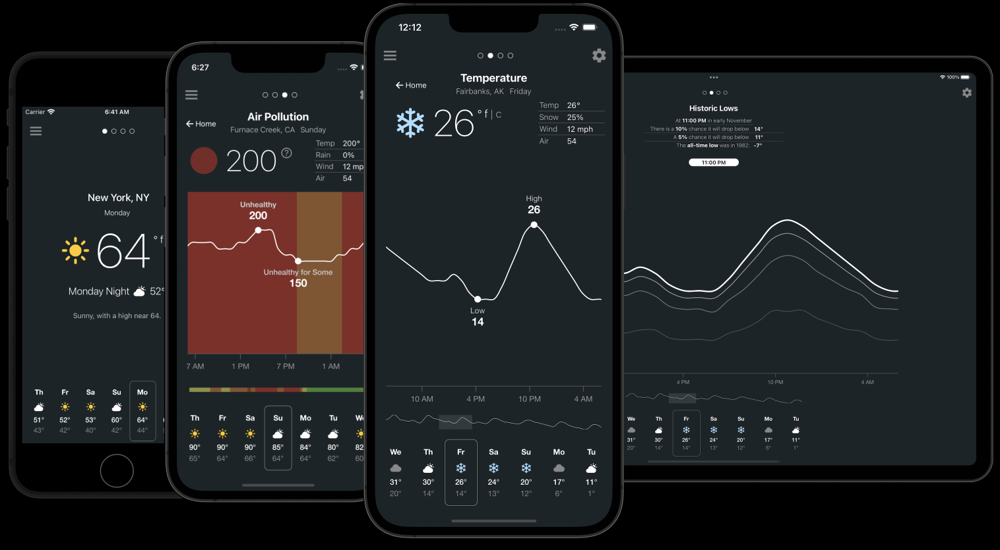
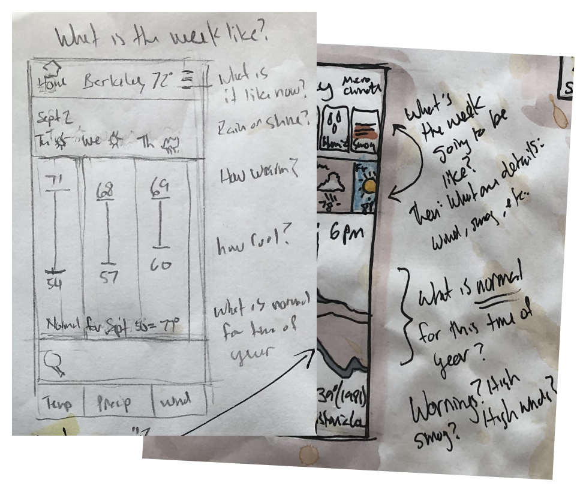
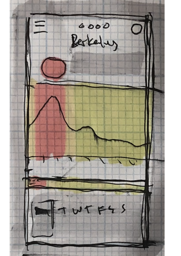
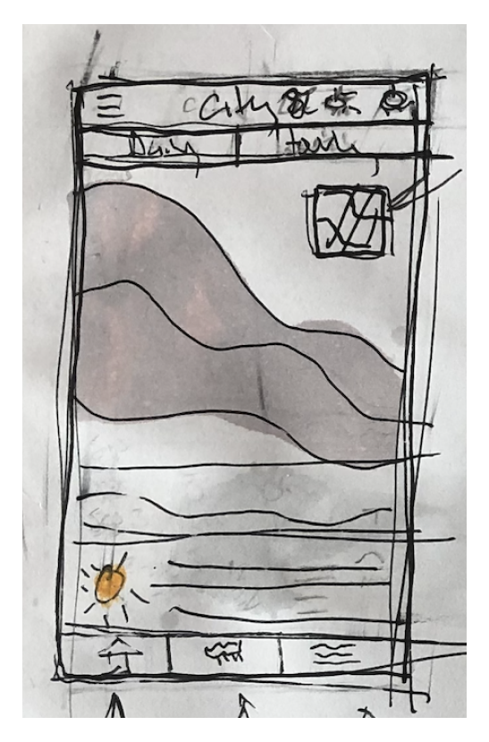

The goal of this project was to exercise skills I haven't used in a while. The last time I designed for mobile was the Obama 2012 campaign, and, while I've written a lot of JavaScript (d3.js) working on a medical informatics team, that was years ago.
For this project, I wanted to explore mobile IX patterns while leveraging my background in data visualization. I also wanted to start learning React Native.

Screenshots of the prototype running on an iPhone SE, iPhone 13 Mini, iPhone 13 Max, and a 12.9-inch iPad Pro.
Concept Exploration
Concept Exploration
Data Analysis and Sketching
I started off by exploring publicly-available data sets: The U.S. government’s weather service API, the EPA’s climate data and OpenWeather.com. I wanted to get a sense of what was out there and what I might include in my app.
I found myself drawn to two things I generally had not seen in weather apps: historical data and air pollution forecasts. But at this point, I wasn't sure what I might do with them.
I found myself drawn to two things I generally had not seen in weather apps: historical data and air pollution forecasts.
Emergent User Scenarios
Once I started sketching concepts out on paper, I realzed something early on: I had a hard time reasoning about my concepts without some kind of criteria against which to evaluate feature ideas.
I started writing questions down on my drawing paper that I wanted the app to answer for users. These included things like “Will I need to bring a raincoat to work tomorrow?” and “Will it be warm enough tonight to eat dinner on the patio?”.

In early sketches, I started writing questions the UX would answer, such as "What's it like outside now?" and, "What is normal for this time of year?".
I realized the questions were filling the role that research findings would normally play in my regular design process. The questions also hung together in logical ways and groups of questions chained together formed something like journeys or user scenarios.
Interesting Ideas
Air Pollution Idea One
I started experimenting with puting air pollution forecasts line charts over color-coded qualitative categories defined by the EPA. These that convey air quality hazardousness with easy-to-understand labels such as "Unhealthy" and "Very Unhealthy".

Air Pollution Idea Two
The first iteration had the color coding arranged horizontally, but this version I made them vertical. This would allow users to align unhealthy air quality with the time of day on the x-axis. (e.g., "Air quality will be unhealthy from 12 pm until 3 pm."")
Performance analysis
Serverless technology will automatically free up system resources when an app has no traffic. When traffic returns, starting up cold can be slow. Exercising the scaling functionality, the showing how long cold starts take would enable developers to optimize for more responsiveness.

Change Log
Changes to apps (revisions) are described in YAML. This feature would create a diff between revisions, allowing developers to see exactly what changed. This could be an interesting place to start debugging. Debugging is the top pain point for serverless users1.
Put controls near the thing they affect
This is a standard Nielsen/Norman heuristic, but I have found it lacking in many mobile UIs.
I put the controls for toggling between fahrenheit and celsius next to temperature readings. (This is heavily influenced by Google’s weather module, which has a lot of features I like.)
Embed usage tips in the UX
Generally good practice. Getting content and timing just right seems like it would take some iterations. I would really like to test these on users with no experience with my app.